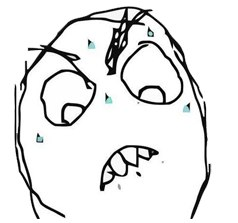
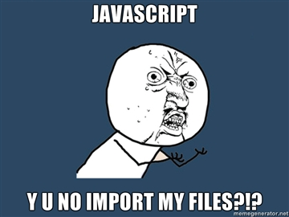
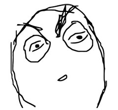

a javascript module loader
James Morrin
treasonx
A Little About The Project
Why RequireJS
No Native Support For include/import/require
What is RequireJS
- Helps Load and Manage js files
- Why use it?
What About jQuery
- RequireJS is not specific to jQuery
- Special build of jQuery
Lets get down to business: Modules
define(['path/to/dependency',
'jquery'],
function(dependency) {
return {yourObject: 'here'};
}
});
Simple Module Name/ Value Pairs
define({
some: 'thing',
foo: 'Bar'
});
Definition Functions Module
define(function() {
var results = 2+2,
me = {};
me.result = results;
me.name = 'james';
return me;
});
Defining Functions with Dependencies
define(['path/to/dependency',
'path/to/another'],
function(dependency, another){
var me = {};
me.thinger = dependency.run();
me.doer = another.getValue();
return me;
}
});
Modules Can Return Functions
define(function() {
var results = 2+2,
me = {};
me.result = result;
return function(){
console.log(me.result);
};
});
Okay, I get it. Modules are cool...
But how does require know where the modules are?!
This is how we configure our scripts.
require({
baseUrl: '/path/to/modules',
paths: {
jquery: '/3rdparty/jquery/jquery-1.5.js',
underscore: '/3rdparty/underscorejs/underscore.js',
backbone: '3rdparty/backbone/backbone.js'
}
});
This allows us to use a friendly name for our scripts.
define(['underscorejs',
'backbone',
'lightbox'],
function() {
return {myThing:'thing' };
}
});
Loading RequireJS and your application
<script type="text/javascript" data-main="js/main" src="js/require.js"></script>
Then load your config.
<script type="text/javascript" src="js/requireconf.js"></script>
Using Modules like a Boss
- Create application layers Loaded on demand.
- Optimize code downloaded by end users.
Okay what if you *NEED* to load modules in order!?
OMG Plugins!!!!!

Order Plugin
define(['path/to/module',
'order!jquery',
'order!jquery_tmpl'],
function(module) {
//do some work
return me;
});
TextFile Dependency
<div class="item">
{{if isDeleted}}
<li id="${id}" class="doneItem" >
{{else}}
<li id="${id}" class="todoItem">
{{/if}}
</div>
TextFile Example
define(['text!path/tmpl.html',
'order!jquery',
'order!jquery_tmpl'],
function(template) {
$(template).template('myTmpl');
$.tmpl('myTmpl', data).appendTo('body');
});
Build System
Build Configuration
({
appDir: "../",
baseUrl: "js",
dir: "../../build",
modules: [
{
name: "mainModule"
}
]
})
Advanced
- NodeJS Support
- Rhino Support
- WebWorkers
- Multiversion Support